11. Evolution#
Code examples from Think Complexity, 2nd edition.
Copyright 2016 Allen Downey, MIT License
import matplotlib.pyplot as plt
import numpy as np
Show code cell content
from os.path import basename, exists
def download(url):
filename = basename(url)
if not exists(filename):
from urllib.request import urlretrieve
local, _ = urlretrieve(url, filename)
print('Downloaded ' + local)
download('https://github.com/AllenDowney/ThinkComplexity2/raw/master/notebooks/utils.py')
from utils import decorate, savefig
# make a directory for figures
!mkdir -p figs
11.1. The Fitness landscape#
A genotype is represented by a length-N array of 0s and 1.
The fitness landscape maps from each location in N-D space to a random fitness.
class FitnessLandscape:
def __init__(self, N):
"""Create a fitness landscape.
N: number of dimensions
"""
self.N = N
self.set_values()
def set_values(self):
self.one_values = np.random.random(self.N)
self.zero_values = np.random.random(self.N)
def random_loc(self):
"""Choose a random location."""
return np.random.randint(2, size=self.N, dtype=np.int8)
def fitness(self, loc):
"""Evaluates the fitness of a location.
loc: array of N 0s and 1s
returns: float fitness
"""
fs = np.where(loc, self.one_values, self.zero_values)
return fs.mean()
def distance(self, loc1, loc2):
return np.sum(np.logical_xor(loc1, loc2))
As an example, here’s a 3-D landscape.
fit_land = FitnessLandscape(3)
fit_land.N
3
one_values and zero_values contain the fitness contributions of having a 1 or 0 at each element of the location array.
fit_land.one_values, fit_land.zero_values
(array([0.99933292, 0.69951037, 0.52363473]),
array([0.23217016, 0.16395673, 0.79125989]))
The fitness of a location is the mean of its fitness contributions.
loc = fit_land.random_loc()
loc
array([0, 0, 1], dtype=int8)
a = np.where(loc, fit_land.one_values, fit_land.zero_values)
a, np.mean(a)
(array([0.23217016, 0.16395673, 0.52363473]), 0.3065872063863382)
fitness evaluates the fitness of a location.
loc, fit_land.fitness(loc)
(array([0, 0, 1], dtype=int8), 0.3065872063863382)
distance computes the number of bit flips to get from one location to another.
loc1 = fit_land.random_loc()
loc2 = fit_land.random_loc()
print(loc1)
print(loc2)
fit_land.distance(loc1, loc2)
[0 1 1]
[0 0 1]
1
It uses np.logical_xor
np.logical_xor(loc1, loc2)
array([False, True, False])
11.2. The agents#
Here’s the class that represents agents.
class Agent:
"""Represents an agent in an NK model."""
def __init__(self, loc, fit_land):
"""Create an agent at the given location.
loc: array of N 0s and 1s
fit_land: reference to an fit_land
"""
self.loc = loc
self.fit_land = fit_land
self.fitness = fit_land.fitness(self.loc)
def copy(self):
return Agent(self.loc, self.fit_land)
Each agent has a location, a reference to a FitnessLandscape, and a fitness.
loc = fit_land.random_loc()
agent = Agent(loc, fit_land)
agent.loc, agent.fitness
(array([1, 0, 1], dtype=int8), 0.5623081266423854)
11.3. The Simulator#
The Simulator class provides methods to run the simulations.
class Simulation:
def __init__(self, fit_land, agents):
"""Create the simulation:
fit_land: fit_land
num_agents: int number of agents
agent_maker: function that makes agents
"""
self.fit_land = fit_land
self.agents = np.asarray(agents)
self.instruments = []
def add_instrument(self, instrument):
"""Adds an instrument to the list.
instrument: Instrument object
"""
self.instruments.append(instrument)
def plot(self, index, *args, **kwargs):
"""Plot the results from the indicated instrument.
"""
self.instruments[index].plot(*args, **kwargs)
def run(self, num_steps=500):
"""Run the given number of steps.
num_steps: integer
"""
# initialize any instruments before starting
self.update_instruments()
for _ in range(num_steps):
self.step()
def step(self):
"""Simulate a time step and update the instruments.
"""
n = len(self.agents)
fits = self.get_fitnesses()
# see who dies
index_dead = self.choose_dead(fits)
num_dead = len(index_dead)
# replace the dead with copies of the living
replacements = self.choose_replacements(num_dead, fits)
self.agents[index_dead] = replacements
# update any instruments
self.update_instruments()
def update_instruments(self):
for instrument in self.instruments:
instrument.update(self)
def get_locs(self):
"""Returns a list of agent locations."""
return [tuple(agent.loc) for agent in self.agents]
def get_fitnesses(self):
"""Returns an array of agent fitnesses."""
fits = [agent.fitness for agent in self.agents]
return np.array(fits)
def choose_dead(self, ps):
"""Choose which agents die in the next timestep.
ps: probability of survival for each agent
returns: indices of the chosen ones
"""
n = len(self.agents)
is_dead = np.random.random(n) < 0.1
index_dead = np.nonzero(is_dead)[0]
return index_dead
def choose_replacements(self, n, weights):
"""Choose which agents reproduce in the next timestep.
n: number of choices
weights: array of weights
returns: sequence of Agent objects
"""
agents = np.random.choice(self.agents, size=n, replace=True)
replacements = [agent.copy() for agent in agents]
return replacements
We’ll use a few functions to create agents. The first one starts with identical agents:
def make_identical_agents(fit_land, num_agents, agent_maker):
"""Make an array of Agents.
fit_land: FitnessLandscape
num_agents: integer
agent_maker: class used to make Agent
returns: array of Agents
"""
loc = fit_land.random_loc()
agents = [agent_maker(loc, fit_land) for _ in range(num_agents)]
return np.array(agents)
Here’s another that starts with agents at random locations:
def make_random_agents(fit_land, num_agents, agent_maker):
"""Make an array of Agents.
fit_land: FitnessLandscape
num_agents: integer
agent_maker: class used to make Agent
returns: array of Agents
"""
locs = [fit_land.random_loc() for _ in range(num_agents)]
agents = [agent_maker(loc, fit_land) for loc in locs]
return np.array(agents)
And this one puts one agent at every possible location:
import itertools
def make_all_agents(fit_land, agent_maker):
"""Make an array of Agents.
fit_land: FitnessLandscape
agent_maker: class used to make Agent
returns: array of Agents
"""
N = fit_land.N
locations = itertools.product([0, 1], repeat=N)
agents = [agent_maker(loc, fit_land) for loc in locations]
return np.array(agents)
make_all_agents uses itertools.product, which returns a generator that enumerates the Cartesian product of the set {0, 1} with itself N times, which is a fancy way to say that it enumerates all sequences of N bits. Here’s an example:
fit_land = FitnessLandscape(3)
agents = make_all_agents(fit_land, Agent)
for agent in agents:
print(agent.loc, agent.fitness)
(0, 0, 0) 0.8119097925622043
(0, 0, 1) 0.6525557691306517
(0, 1, 0) 0.568525183682043
(0, 1, 1) 0.40917116025049044
(1, 0, 0) 0.6718529116129389
(1, 0, 1) 0.5124988881813864
(1, 1, 0) 0.4284683027327776
(1, 1, 1) 0.269114279301225
11.4. The distribution of fitness#
Let’s create a fitness landscape with an agent at each location and see what the distribution of fitness looks like.
np.random.seed(17)
N = 8
fit_land = FitnessLandscape(N)
agents = make_all_agents(fit_land, Agent)
sim = Simulation(fit_land, agents)
plot_fitnesses plots the CDF of fitness across the population.
try:
import empiricaldist
except ImportError:
!pip install empiricaldist
from empiricaldist import Cdf
def plot_fitnesses(sim):
"""Plot the CDF of fitnesses.
sim: Simulation object
"""
fits = sim.get_fitnesses()
cdf_fitness = Cdf.from_seq(fits)
cdf_fitness.plot()
return np.mean(fits)
Initially the distribution is approximately Gaussian, because it’s the sum of 8 independent uniformly distributed variates. See the Central Limit Theorem.
plot_fitnesses(sim)
decorate(xlabel='Fitness', ylabel='CDF')
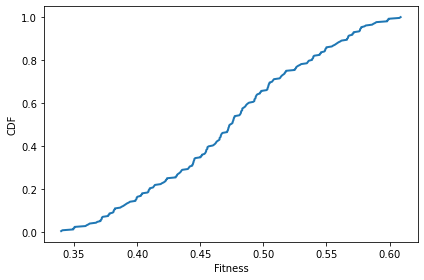
After one time step, there’s not much change.
sim.step()
plot_fitnesses(sim)
decorate(xlabel='Fitness', ylabel='CDF')
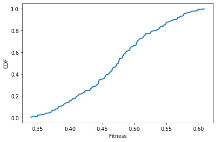
After 100 time steps, we can see that the number of unique values has decreased.
sim.run(100)
plot_fitnesses(sim)
decorate(xlabel='Fitness', ylabel='CDF')
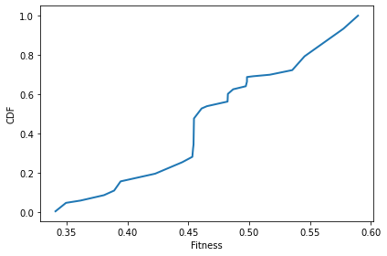
11.5. Instruments#
To measure these changes over the course of the simulations, we’ll use Instrument objects.
class Instrument:
"""Computes a metric at each timestep."""
def __init__(self):
self.metrics = []
def update(self, sim):
"""Compute the current metric.
Appends to self.metrics.
sim: Simulation object
"""
# child classes should implement this method
pass
def plot(self, **options):
plt.plot(self.metrics, **options)
The MeanFitness instrument computes the mean fitness after each time step.
class MeanFitness(Instrument):
"""Computes mean fitness at each timestep."""
label = 'Mean fitness'
def update(self, sim):
mean = np.nanmean(sim.get_fitnesses())
self.metrics.append(mean)
Here’s mean fitness as a function of (simulated) time for a single run.
np.random.seed(17)
N = 8
fit_land = FitnessLandscape(N)
agents = make_all_agents(fit_land, Agent)
sim = Simulation(fit_land, agents)
instrument = MeanFitness()
sim.add_instrument(instrument)
sim.run(500)
sim.plot(index=0)
decorate(xlabel='Time', ylabel='Mean fitness')
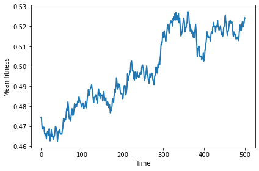
We can get a better sense of average behavior, and variation around the average, but plotting multiple runs.
def plot_sims(fit_land, agent_maker, sim_maker, instrument_maker, **plot_options):
"""Runs simulations and plots metrics.
fit_land: FitnessLandscape
agent_maker: function that makes an array of Agents
sim_maker: function that makes a Simulation
instrument_maker: function that makes an instrument
plot_options: passed along to plot
"""
plot_options['alpha'] = 0.4
for _ in range(10):
agents = agent_maker(fit_land)
sim = sim_maker(fit_land, agents)
instrument = instrument_maker()
sim.add_instrument(instrument)
sim.run()
sim.plot(index=0, **plot_options)
decorate(xlabel='Time', ylabel=instrument.label)
return sim
agent_maker1 puts one agent at each location.
def agent_maker1(fit_land):
return make_all_agents(fit_land, Agent)
With no differential survival or reproduction, we get a random walk.
np.random.seed(17)
plot_sims(fit_land, agent_maker1, Simulation, MeanFitness, color='C0')
savefig('figs/chap11-1')
Saving figure to file figs/chap11-1
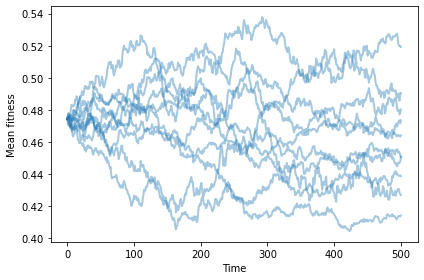
11.6. Differential survival#
We can add differential survival by overriding choose_dead
class SimWithDiffSurvival(Simulation):
def choose_dead(self, ps):
"""Choose which agents die in the next timestep.
ps: probability of survival for each agent
returns: indices of the chosen ones
"""
n = len(self.agents)
is_dead = np.random.random(n) > ps
index_dead = np.nonzero(is_dead)[0]
return index_dead
With differential survival, mean fitness increases and then levels off.
np.random.seed(17)
plot_sims(fit_land, agent_maker1, SimWithDiffSurvival, MeanFitness, color='C0')
savefig('figs/chap11-2')
Saving figure to file figs/chap11-2
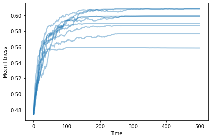
We can add differential reproduction by overriding choose_replacements
class SimWithDiffReproduction(Simulation):
def choose_replacements(self, n, weights):
"""Choose which agents reproduce in the next timestep.
n: number of choices
weights: array of weights
returns: sequence of Agent objects
"""
p = weights / np.sum(weights)
agents = np.random.choice(self.agents, size=n, replace=True, p=p)
replacements = [agent.copy() for agent in agents]
return replacements
With differential reproduction (but not survival), mean fitness increases and then levels off.
np.random.seed(17)
plot_sims(fit_land, agent_maker1, SimWithDiffReproduction, MeanFitness, color='C0');
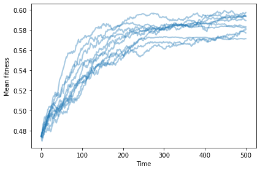
Exercise: What if you have both? Write a class called SimWithBoth that uses the new versions of choose_dead and choose_replacements. Does mean fitness increase more quickly?
11.7. Number of different agents#
Without mutation, we have no way to add diversity. The number of occupied locations goes down over time.
OccupiedLocations is an instrument that counts the number of occupied locations.
class OccupiedLocations(Instrument):
label = 'Occupied locations'
def update(self, sim):
uniq_agents = len(set(sim.get_locs()))
self.metrics.append(uniq_agents)
Here’s what that looks like with no differential survival or reproduction.
np.random.seed(17)
plot_sims(fit_land, agent_maker1, Simulation, OccupiedLocations, color='C2');
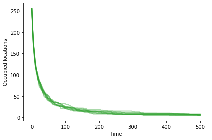
Exercise: What effect do differential survival and reproduction have on the number of occupied locations?
The model we have so far might explain changes in existing populations, but it doesn’t explain increasing diversity or complexity.
11.8. Mutation#
Mutation is one way of increasing, or at least maintaining, diversity.
Mutant is a kind of agent that overrides copy:
class Mutant(Agent):
def copy(self, prob_mutate=0.05):
if np.random.random() > prob_mutate:
loc = self.loc.copy()
else:
direction = np.random.randint(self.fit_land.N)
loc = self.mutate(direction)
return Mutant(loc, self.fit_land)
def mutate(self, direction):
"""Computes the location in the given direction.
Result differs from the current location along the given axis.
direction: int index from 0 to N-1
returns: new array of N 0s and 1s
"""
new_loc = self.loc.copy()
new_loc[direction] ^= 1
return new_loc
To test it out, I’ll create an agent at a random location.
N = 8
fit_land = FitnessLandscape(N)
loc = fit_land.random_loc()
agent = Mutant(loc, fit_land)
agent.loc
array([0, 0, 0, 1, 1, 1, 0, 0], dtype=int8)
If we make 20 copies, we expect about one mutant.
for i in range(20):
copy = agent.copy()
print(fit_land.distance(agent.loc, copy.loc))
0
0
0
0
0
0
0
0
0
0
0
0
1
0
1
1
0
0
0
0
agent_maker2 makes identical agents.
def agent_maker2(fit_land):
agents = make_identical_agents(fit_land, 100, Mutant)
return agents
If we start with identical mutants, we still see increasing fitness.
np.random.seed(17)
sim = plot_sims(fit_land, agent_maker2, SimWithBoth, MeanFitness, color='C0')
savefig('figs/chap11-3')
Saving figure to file figs/chap11-3
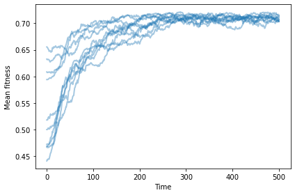
And now the number of occupied locations increases, reaching a steady state at about 10.
np.random.seed(17)
sim = plot_sims(fit_land, agent_maker2,
SimWithBoth, OccupiedLocations,
color='C2', linewidth=1)
savefig('figs/chap11-4')
Saving figure to file figs/chap11-4
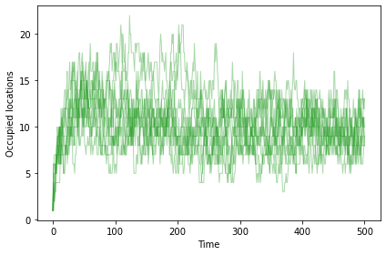
In steady state, many agents are at the optimal location, and others are usually just a few mutations away. To quantify that, we can compute the mean distance between all pairs of agents.
The distance between two agents is the number of bit flips to get from one location to another.
class MeanDistance(Instrument):
"""Computes mean distance between pairs at each timestep."""
label = 'Mean distance'
def update(self, sim):
N = sim.fit_land.N
i1, i2 = np.triu_indices(N)
agents = zip(sim.agents[i1], sim.agents[i2])
distances = [fit_land.distance(a1.loc, a2.loc)
for a1, a2 in agents if a1 != a2]
mean = np.mean(distances)
self.metrics.append(mean)
Mean distance is initially 0, when all agents are identical. It increases as the population migrates toward the optimal location, then settles into a steady state around 1.5.
np.random.seed(17)
fit_land = FitnessLandscape(10)
agents = make_identical_agents(fit_land, 100, Mutant)
sim = SimWithBoth(fit_land, agents)
sim.add_instrument(MeanDistance())
sim.run(500)
sim.plot(0, color='C1')
decorate(xlabel='Time', ylabel='Mean distance')
savefig('figs/chap11-5')
Saving figure to file figs/chap11-5
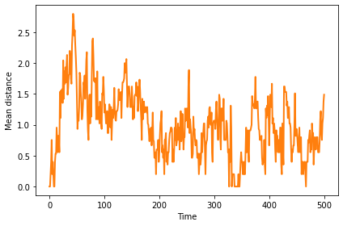
11.8.1. Changing landscape#
One cause of speciation is a change in the landscape. Suppose a population in steady state in one landscape is transported to another landscape. After a period of migration, it would settle around the new equilibrium point, with a small mean distance between agents. The mean distance between the original agents and the migrants is generally much larger.
The following simulation runs 500 steps on one landscape, then switches to a different landscape and resumes the simulation.
np.random.seed(17)
fit_land = FitnessLandscape(10)
agents = make_identical_agents(fit_land, 100, Mutant)
sim = SimWithBoth(fit_land, agents)
sim.add_instrument(MeanFitness())
sim.add_instrument(OccupiedLocations())
sim.add_instrument(MeanDistance())
sim.run(500)
locs_before = sim.get_locs()
fit_land.set_values()
sim.run(500)
locs_after = sim.get_locs()
After the switch to a new landscape, mean fitness drops briefly, then the population migrates to the new optimal location, which happens to be higher, in this example.
vline_options = dict(color='gray', linewidth=2, alpha=0.4)
sim.plot(0, color='C0')
plt.axvline(500, **vline_options)
decorate(xlabel='Time', ylabel='Mean fitness')
savefig('figs/chap11-6')
Saving figure to file figs/chap11-6
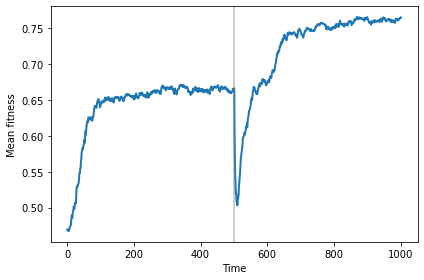
The number of occupied locations (sometimes) increases while the population is migrating.
sim.plot(1, color='C2')
plt.axvline(500, **vline_options)
decorate(xlabel='Time', ylabel='Occupied locations')
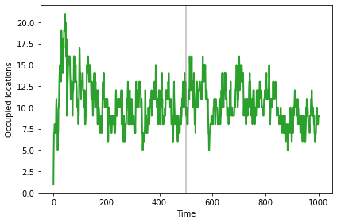
And the mean distance (sometimes) increases until the population reaches the new steady state.
sim.plot(2, color='C1')
plt.axvline(500, **vline_options)
decorate(xlabel='Time', ylabel='Mean distance')
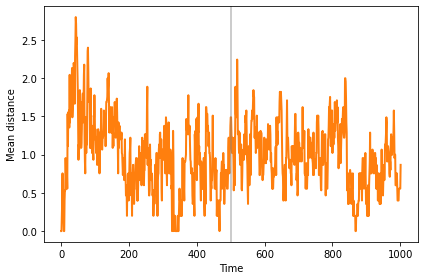
The mean distance between clusters is much bigger than the dispersion within clusters, so we can interpret the clusters as distinct species.
distances = []
for loc1 in locs_before:
for loc2 in locs_after:
distances.append(fit_land.distance(loc1, loc2))
np.mean(distances)
6.3948
Exercise: When we change the landscape, the number of occupied locations and the mean distance usually increase, but the effect is not always big enough to be obvious. You might want to try out some different random seeds to see how general the effect is.